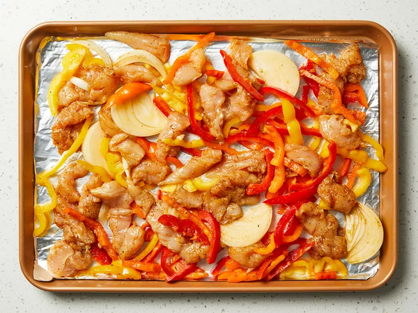

Sheet Pan Chicken Fajitas
This sheet pan chicken fajitas recipe is quick, easy, and a great way to make flavorful homemade fajitas for a crowd.
- Prep Time: 20 mins
- Cook Time: 15 mins
- Additional Time: 30 mins
- Total Time: 1hr 5mins
- Servings: 8
Ingredients
- ⅓ cup vegetable oil
- 2 teaspoons chili powder
- 1 teaspoon dried oregano
- ½ teaspoon garlic powder
- ½ teaspoon onion powder
- ½ teaspoon ground cumin
- ½ teaspoon salt
- ¼ teaspoon ground black pepper
- 1 pinch ground cayenne pepper
- 1 ½ pounds chicken tenders, quartered
- 4 cups sliced bell peppers, any color
- 1 onion, sliced
- ¼ cup chopped fresh cilantro
- ½ lime, juiced
Instructions
Step 1
Gather all ingredients.
Step 2
Combine oil, chili powder, oregano, garlic powder, onion powder, cumin, salt, black pepper, and cayenne pepper in a large resealable plastic bag. Add chicken tenders, bell peppers, and onion; seal the bag and shake to mix. Marinate in the refrigerator for 30 minutes to 2 hours.
Step 3
Preheat the oven to 400 degrees F (200 degrees C). Line a rimmed sheet pan with aluminum foil.
Step 4
Spread the chicken mixture onto the prepared pan.
Step 5
Roast in the preheated oven, stirring halfway, until the chicken is no longer pink and the bell peppers are softened, about 15 to 20 minutes. An instant-read thermometer inserted into the center of the chicken should read at least 165 degrees F (74 degrees C).
Step 6
Sprinkle cilantro and pour lime juice over the chicken mixture; stir to distribute.
Nutrition Facts (per serving)
Calories: 200
Fat: 11g
Carbs: 6
Protein: 19g